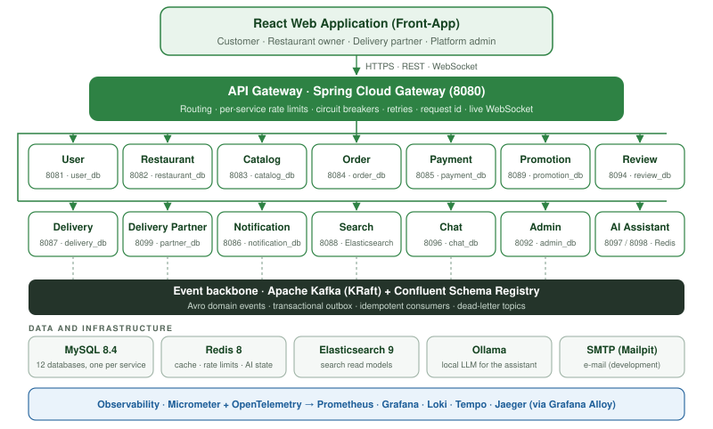
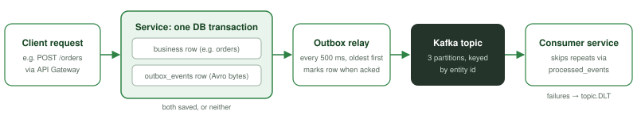

What has been built: services, project structure, interactions, workflows, configuration, testing, deployment and the completed feature set.
Sections 1, 2 and 14 summarise what was delivered and are written for every reader. Sections 3 to 9 are the technical reference for developers. Sections 10 to 13 cover security, operations and quality for architects and DevOps engineers. Section 15 lists the open items and section 16 the handover checklist.
The Food Delivery Platform has been implemented as proposed: an event-driven microservices back end behind an API gateway, and one responsive web application with separate areas for customers, restaurant owners, delivery partners and platform administrators. Every business flow, from registration to a delivered and reviewed order, works end to end and is covered by automated tests.
Phase 18 (token-based security with JWT) is complete: every API call carries a short-lived access token that the gateway and each service check, and the internal APIs require the services' shared secret. Before a public deployment, still terminate HTTPS at the edge, keep the service ports on a private network and move the secrets into a secrets manager (section 10).
| Phase | Deliverable | Status |
|---|---|---|
| 1 | Foundation and API gateway | Complete |
| 2 | User service (registration, sign-in, profiles, addresses, roles) | Complete |
| 3 | Restaurant service (onboarding, approval, lifecycle, hours) | Complete |
| 4 | Catalog service (categories, menus, prices, availability) | Complete |
| 5 | Order service (cart, checkout, lifecycle, restaurant orders) | Complete |
| 6 | Payment service (payments, refunds, provider strategy) | Complete |
| 7 | Kafka and Schema Registry (event contracts) | Complete |
| 8 | Saga and transactional outbox | Complete |
| 9 | Notification service (e-mail, SMS, push, inbox, live updates) | Complete |
| 10 | Delivery service (dispatch, offers, pickup, delivery) | Complete |
| 11 | Search service with Elasticsearch | Complete |
| 12 | Redis caching and rate limiting | Complete |
| 13 | Promotion service (coupons); admin service (dashboard, reports, audit log) | Complete |
| 14 | Resilience (Resilience4j) and observability (metrics, logs, traces) | Complete |
| 15 | Code quality gates and end-to-end integration tests | Complete |
| 16 | Web application: admin area | Complete |
| 17 | Web application: customer area | Complete |
| 18 | Security: JWT authentication and authorisation | Complete |
| Extension | Content | Status |
|---|---|---|
| Restaurant-owner area | Owner sign-in and registration, restaurant submission, dashboard, order board, menu management, reviews. | Complete |
| Delivery-partner area | Partner sign-in and registration, online/offline, offers, current delivery, history, profile. | Complete |
| Delivery Partner service | Partner profiles and suspension moved into their own service (event contracts 1.7.0); dispatch stays in the delivery service. | Complete |
| Reviews and ratings | Review service: order and dish ratings, public ratings, admin review screens. | Complete |
| Support chat | Chat service: one conversation per user with a shared admin inbox, live delivery of messages. | Complete |
| Razorpay payments | Real payment provider behind the PAYMENT_PROVIDER switch: hosted Checkout, signature verification, webhook, refunds. | Complete off by default |
| Live tracking map | Tracking page with status stepper, partner card and a map of the rider's real GPS position, sent from the partner's browser while on the way and shown only to that order's customer (latest position only). "Use my current location" pins customer addresses. A labelled simulation remains for demos. | Complete no route or arrival time |
| AI assistant: questions | Read-only tools for customers, owners, partners and admins, rendered as cards, tables and links. | Complete |
| AI assistant: confirmed actions | Prepare-then-confirm changes for all roles (cancel or accept orders, mark deliveries, reassign...), audited. A change request always gets a prepared action: the model is asked once more, then the server prepares it from the user's own words. | Complete verified with the real model |
| AI assistant: chat UI and voice | Redesigned chat panel; speech input and read-aloud through the browser's Web Speech API, with fallbacks. | Complete |

/ws/v1/live for live updates.X-Request-Id, applies the route's rate limit, circuit breaker, timeouts and (for GET only)
retries, and forwards the request to the owning service.| Decision | Outcome |
|---|---|
| Database per service | 12 MySQL databases with one user each; no service reads another's tables. |
| Outbox over change data capture | The transactional outbox is the publishing mechanism. Debezium CDC was evaluated in shadow mode (Compose profile cdc) and kept optional (docs/decision-debezium-cdc.md). |
| Delivery partner service split | Profiles and suspension in the delivery partner service; availability and assignment stay with deliveries, because assigning a delivery and making its partner busy must be one transaction (docs/decision-delivery-partner-service.md). |
| Search as a read model | Elasticsearch indexes built from events; MySQL stays the source of truth; consistency check and repair endpoints. |
| Admin as a composition service | The admin service owns no business data; it calls the owning services in parallel as the admin and stores only audit copies. |
| Idempotency keys in MySQL | Stored with the order or payment they protect, in the same transaction, never in Redis. |
| Razorpay over plain REST | The official SDK pulls in outdated OkHttp and Okio versions (one with a known CVE) that clash with the OpenTelemetry exporter. |
| Local language model | Ollama with a 4-billion-parameter Qwen 3 model runs on the platform's own hardware; no data goes to external AI services. |
| Technology | Version |
|---|---|
| Java / Spring Boot | Java 21 (LTS) / Spring Boot 4.1.1 |
| Spring Cloud | 2025.1.3 (Gateway 5.0, WebFlux server; Spring Cloud CircuitBreaker 5.0) |
| Spring AI / model | Spring AI 2.0.1 with Ollama; model qwen3:4b-instruct-2507-q4_K_M (configurable) |
| MySQL | 8.4 (LTS), Flyway migrations |
| Kafka / Schema Registry / Avro | Apache Kafka 4.2 in KRaft mode (Confluent Platform 8.2.4) / Schema Registry 8.2.4 / Avro 1.12.2 |
| Elasticsearch | 9.4.5 (Spring Data Elasticsearch 6.1) |
| Redis | 8.10 (Spring Data Redis 4.1, Lettuce) |
| Resilience4j | 2.4.0 |
| Observability | Prometheus 3.15, Grafana 13.2, Tempo 2.10, Jaeger 2.21, Loki 3.7, Grafana Alloy 1.20 |
| Code quality | Checkstyle 14.3, SpotBugs 4.10, JaCoCo 0.8.15, ArchUnit 1.5, SonarQube Community Build 26.9 |
| Web application | React 19.3, TypeScript 6.0, Vite 8.3, React Router 8.4, Redux Toolkit 2.13, TanStack Query 5, Axios 1.20, Tailwind CSS 4.3, Recharts 3.10, Leaflet; ESLint 10, Prettier 3.9, Vitest 5 |
| Development tools | Mailpit 1.31, Kafka UI (kafbat) 1.5.0, Kibana 9.4.5, phpMyAdmin 5.2.3 |
One repository holds every service, the shared library, the web application, the tests and the infrastructure. Each service is an independent Maven project with its own wrapper, so it builds and deploys on its own.
| Folder or file | Content |
|---|---|
| docker-compose.yml | Infrastructure; the services and the observability stack are kept in it, commented out |
| .env.example | Template of local settings; copy to .env (git-ignored) |
| start-local.ps1 | Runs the services and the web application on the developer's machine |
| README.md | Full technical reference: APIs, design notes, operations |
| README-LOCAL-TESTING.md | Manual testing guide (accounts, payments, scenarios) |
| docs/ | Architecture decisions, AI assistant design, ratings; docs/handover holds these documents |
| infrastructure/mysql/init/ | Creates one database and one user per service |
| infrastructure/observability/ | Prometheus, Tempo, Jaeger, Loki, Alloy and Grafana configuration and dashboards |
| infrastructure/kibana/, debezium/ | Kibana data views; optional change data capture (shadow mode) |
| quality/ | Shared Checkstyle and SpotBugs rules, SonarQube scan script, benchmarks |
| event-contracts/ | Shared library: Avro schemas of all events and the topic names (version 1.7.0) |
| e2e-tests/ | End-to-end tests of the running platform through the API gateway |
| front-app/ | React web application |
| Service folder | Responsibility | Port | Data |
|---|---|---|---|
| api-gateway/ | Spring Cloud Gateway | 8080 | Redis |
| user-service/ | Users, sign-in, addresses | 8081 | user_db |
| restaurant-service/ | Restaurants and their lifecycle | 8082 | restaurant_db |
| catalog-service/ | Categories and menus | 8083 | catalog_db |
| order-service/ | Cart, checkout, orders | 8084 | order_db |
| payment-service/ | Payments and refunds | 8085 | payment_db |
| notification-service/ | Notifications and live updates | 8086 | notification_db |
| delivery-service/ | Deliveries and dispatch | 8087 | delivery_db |
| search-service/ | Search | 8088 | Elasticsearch |
| promotion-service/ | Coupons | 8089 | promotion_db |
| admin-service/ | Dashboard, reports, platform audit log | 8092 | admin_db |
| review-service/ | Ratings and reviews | 8094 | review_db |
| chat-service/ | Support chat | 8096 | chat_db |
| ai-mcp-client/ | AI assistant: browser-facing side | 8097 | Redis |
| ai-mcp-server/ | AI assistant: agent and tools | 8098 | Redis, Ollama |
| delivery-partner-service/ | Delivery partners' profiles and suspension | 8099 | delivery_partner_db |
Every domain service follows the same package layout under com.fooddelivery.<service>, enforced by
architecture tests, so a developer who knows one service can navigate all of them.
| Package | Content |
|---|---|
| controller | Thin REST controllers, no business logic |
| service | Business rules and transactions |
| repository | Spring Data JPA repositories |
| entity | JPA entities and enums |
| dto/request | Validated request records |
| dto/response | Response records (entities never returned) |
| mapper | Entity to DTO conversion |
| Package | Content |
|---|---|
| exception | Business exceptions, ProblemDetail handler |
| validation | Reusable validation, business validators |
| client | Calls to other services (timeouts, request id) |
| kafka/producer | Events into the outbox; OutboxRelay publishes |
| kafka/consumer | Kafka listeners, delegating to services |
| web | Request id, the caller from the access token, the internal service token check |
| config | Configuration, security rules, properties, OpenAPI |
Each service also contains src/main/resources/db/migration (Flyway scripts),
application.yml, a multi-stage Dockerfile, the Maven wrapper and an .http file
with ready-made API requests.
ai-mcp-server is organised by responsibility: agent (the Spring AI loop and system prompts),
tool (role-specific tools, each calling one fixed API through the gateway), proposal and
action (prepared orders and changes waiting for confirmation, stored in Redis), draft,
client, security, support (audit logging, name matching), metrics,
controller, web and config. ai-mcp-client holds the browser-facing
controllers, identity verification, conversation storage, rate limits and the client of the agent server.
| front-app/src/ | Content |
|---|---|
| api/ | Axios instance, API client, error mapping, TanStack Query client |
| components/ | Common components (buttons, tables, toasts, dialogs) and business components (assistant, live tracking, ...) |
| context/ | Layout, toast and assistant contexts |
| hooks/ | Shared hooks, TanStack Query hooks per API area, voice input and output |
| layouts/ | Admin, customer, owner and partner layouts |
| pages/ | Admin, Analytics, AuditLog, Calendar, Category, Chat, Coupon, Customer, Dashboard, Delivery, Food, Notification, Order, Owner, Partner, Payment, Restaurant, Review, Search, Storefront |
| realtime/ | Reconnecting WebSocket, live-update provider, cache invalidation rules |
| services/ | One module per back-end area (orders, payments, deliveries, assistant, ...) |
| store/ | Redux Toolkit store: session and list slices |
| theme/ | Design tokens, light and dark themes |
| types/ | TypeScript types of the API |
| utils/ | Formatting, constants and routes, error messages |
The application has four areas: /admin, /customer, /owner and
/partner. Environment files .env.development, .env.demo, .env.uat,
.env.preprod and .env.production configure each build.
Each card lists the service's responsibility, data, main APIs, events and dependencies. Size is given as production
classes / test classes / database migrations. Full API tables and design notes are in README.md.
Retry-After), request id, WebSocket route for live updates.app.gateway.services table in application.yml; validated at start-up (the gateway refuses inconsistent values)./api/v1/auth/register|login, /api/v1/users/me, /me/addresses, /api/v1/admin/users, internal /api/v1/internal/users/{id}.UserRegistered, AdminActionAudited.version; cached public page./api/v1/restaurants, /api/v1/restaurants/mine, /api/v1/admin/restaurants.RestaurantChanged, AdminActionAudited / user-service (owner details)./api/v1/categories, /api/v1/restaurants/{id}/menu, /api/v1/restaurants/mine/{id}/menu-items, /api/v1/admin/categories, /api/v1/admin/menu-items.CategoryChanged, MenuItemChanged; consumes RestaurantChanged.Idempotency-Key; order lifecycle and timeline; restaurant order board (accept, reject, preparing, ready); cancellations; unpaid-order timeout (15 min); sales summaries and statistics./api/v1/cart, /api/v1/orders, /api/v1/restaurants/mine/{id}/orders, /api/v1/admin/orders.OrderCreated, OrderStatusChanged, OrderCancelled, OrderPaymentRejected; consumes PaymentStatusChanged, DeliveryStatusChanged.SIMULATED / RAZORPAY; refunds (full, partial, automatic) with amount reservation; failed-refund recovery; Razorpay Checkout, signature verification and webhook./api/v1/payments, /api/v1/payments/razorpay/*, /api/v1/admin/payments, /api/v1/admin/refunds.PaymentStatusChanged; consumes OrderCreated, OrderCancelled, OrderPaymentRejected./api/v1/notifications, /api/v1/admin/notifications, WebSocket /ws/v1/live.FOR UPDATE SKIP LOCKED); 2-minute accept timeout; pickup and delivery with cash collection; partner availability; admin search, delayed deliveries and reassignment./api/v1/delivery/partners/me/availability, /api/v1/delivery/deliveries/mine, /api/v1/delivery/orders/{orderId}, /api/v1/admin/deliveries.DeliveryStatusChanged, DeliveryPartnerStatusChanged; consumes order, restaurant and DeliveryPartnerChanged events./api/v1/delivery/partners/me, /api/v1/admin/delivery-partners (same URLs as before the split, routed by the gateway).DeliveryPartnerChanged; consumes UserRegistered, DeliveryPartnerStatusChanged./api/v1/search/restaurants|foods|categories|suggest, /api/v1/admin/search/*./api/v1/coupons, /api/v1/admin/coupons, internal reservation API used by order-service.ChatMessageSent, ChatMessagesRead (ids only) for live delivery.AdminActionAudited from every service./api/v1/assistant/*: verifies that the user id and role belong together (user-service), keeps conversations in Redis, rate limits (20 questions per 10 minutes), forwards Confirm and Cancel.ai.audit; internal endpoints protected by a shared service token.Internal endpoints live under /api/v1/internal/** and are not routed by the gateway; they require the services' shared
X-Service-Token. Every call passes on the request id (calls made for an administrator carry the
administrator's own access token), and is guarded by timeouts, retry on connection failure, a circuit breaker and a
bulkhead.
| Caller | Calls | Why, and behaviour when the target is down |
|---|---|---|
| order-service | user, restaurant, catalog, promotion | Checkout checks (customer, address, restaurant open, prices and stock) and coupon reservation. Down: checkout answers 503, nothing is half-saved; the cart still loads without the coupon check. |
| catalog-service | restaurant | Ownership of a restaurant not yet known from events. Down: owner changes answer 503. |
| restaurant-service | user | Owner details on the admin review screen. Down: owner shown as unavailable. |
| payment-service | order; Razorpay API | Amount of an order whose event has not arrived; payment provider calls. |
| delivery-service | order, restaurant, delivery-partner | Details missing from events. Down: the delivery waits for the next run. |
| notification-service | user, restaurant, order; SMTP | Current contact details at sending time. Down: retried later. |
| review-service | order, catalog | Order ownership and status; dish photos. Catalog down: page shown without photos. |
| chat-service | user, notification | Names; online presence (best effort). |
| admin-service | user, restaurant, catalog, order, payment, delivery, promotion | Dashboard and reports in parallel (5 s each); a failed source is listed as unavailable. |
| ai-mcp-client | user (public key), ai-mcp-server | Checks the access token; the agent. Down: 503 "assistant unavailable". |
| ai-mcp-server | API gateway, Ollama | Every tool calls the public API as the user, so the services' own access rules apply. |
All topics are prefixed fooddelivery., have 3 partitions, are keyed by entity id and have a
.DLT dead-letter topic per consumer. Schemas are in event-contracts version 1.7.0.
| Topic | Producer | Consumers |
|---|---|---|
user.registered | user | notification, delivery-partner |
restaurant.changed | restaurant | catalog, notification, delivery, search |
catalog.category-changed | catalog | search |
catalog.menu-item-changed | catalog | search |
order.created | order | payment, delivery, promotion |
order.status-changed | order | notification, delivery, promotion |
order.cancelled | order | payment, notification, delivery, promotion |
order.payment-rejected | order | payment |
payment.status-changed | payment | order, notification |
delivery.status-changed | delivery | order, notification |
delivery-partner.changed | delivery-partner | delivery |
delivery.partner-status-changed | delivery | delivery-partner |
admin.action-audited | every service with admin actions | admin |
chat.message-sent | chat | notification (live hints) |
chat.messages-read | chat | notification (live hints) |

outbox_events table in the same
transaction as the change; the relay publishes every 500 ms; consumers skip repeats via processed_events.The notification service runs a second consumer group that turns order, payment, delivery, restaurant and chat events
into id-only hints (ORDER_STATUS_CHANGED, DELIVERY_STATUS_CHANGED, CHAT_MESSAGE
...). Audience rules decide who receives each hint: administrators all events, customers their own orders, owners their
restaurants, partners their deliveries. The connection carries the user's access token, which the notification
service checks before accepting it. The browser reconnects automatically with back-off, re-reads data after a
reconnect and groups refreshes within 400 ms.
| Transition | Who or what causes it |
|---|---|
PAYMENT_PENDING → PLACED | Online payment succeeded (PaymentStatusChanged). Cash-on-delivery orders start as PLACED. |
PLACED → ACCEPTED / REJECTED | The restaurant accepts or rejects the order. |
→ PREPARING → READY_FOR_PICKUP | The restaurant works through the order. |
→ OUT_FOR_DELIVERY → DELIVERED | The partner's pickup and delivery (DeliveryStatusChanged); a cash order becomes paid. |
→ CANCELLED | The customer before the restaurant accepts; an administrator for any unfinished order (audited); the system after 15 minutes unpaid. |
Online orders are invisible to the restaurant until paid.
Idempotency-Key. order-service checks
the customer, address, restaurant (active and open) and every dish, reserves the coupon use, saves the order with
snapshots of names, prices and address, and writes OrderCreated to its outbox.SUCCESS only after the HMAC signature is verified and Razorpay confirms the captured amount (or
the signed webhook arrives first).PaymentStatusChanged(SUCCESS) moves the order to PLACED; the
restaurant is notified and sees it on its board.OrderPaymentRejected); an unpaid order is cancelled after 15 minutes; a
cancelled order releases its coupon use and cancels its delivery.READY_FOR_PICKUP, delivery-service creates a pending delivery. The assignment job offers it to the
longest-waiting available partner in the restaurant's city.OUT_FOR_DELIVERY; delivery (with cash collected for cash orders) moves it to
DELIVERED, marks a cash order paid, and makes the coupon use final.An owner registers, submits a restaurant with its food licence, and waits for review (PENDING). An
administrator approves or rejects it with a reason (the owner may resubmit), then activates it. Every status change is
e-mailed to the owner, copied into catalog, delivery and search by events, and audited. The owner then manages dishes,
prices and availability; administrators can block a dish the owner cannot unblock.
A partner registers; UserRegistered creates their profile in delivery-partner-service. They add vehicle
and city and go online in delivery-service. Administrators can suspend a partner (not while on a delivery) and
reactivate them; suspensions reach dispatch through DeliveryPartnerChanged.
Restaurant, category and menu-item events update three Elasticsearch indexes within a second. Customers search by text, city, cuisine, distance, category, food type and price, with autocomplete. Administrators can see index health, run a consistency check against MySQL and repair differences.
| Step | What happens | Coupon use |
|---|---|---|
| Customer applies a coupon | promotion-service validates it; the cart shows the reason when it does not qualify (422). | – |
| Checkout | One use is reserved; a row lock makes sure the last use goes to exactly one customer. | RESERVED |
OrderCreated | The reservation is linked to the order. | APPLIED |
| Order delivered | The use becomes final. | REDEEMED |
OrderCancelled | The use is given back; the customer may use the coupon again. | RELEASED |
| No order within 30 minutes | A clean-up job gives the use back. | EXPIRED |
Every administrator change (user role, restaurant approval, dish block, refund, delivery reassignment, partner
suspension, coupon change, notification resend) requires a reason, is saved with an audit record in the same
transaction, and is copied to the admin service as AdminActionAudited. The platform-wide audit log
searches across services by administrator, action, entity, request id, date and text.
A customer, owner or partner writes to Support; the message is saved once (retry safe), and a live hint reaches every connected administrator. Any administrator can answer; read receipts and unread counts are shared across administrators, while pin and mute are personal.
act_<uuid>, with an expiry) and shown as a
summary card with Confirm and Cancel.ai.audit log..env)Copy .env.example to .env and set real values; the file is git-ignored. Docker Compose and
start-local.ps1 read it.
| Group | Keys |
|---|---|
| Database | MYSQL_PORT (host port, 3330), MYSQL_ROOT_PASSWORD, one *_DB_PASSWORD per service database |
| First administrator | BOOTSTRAP_ADMIN_EMAIL, BOOTSTRAP_ADMIN_PASSWORD |
| Security | JWT_PRIVATE_KEY (RSA key that signs the access tokens; development makes a temporary one when it is empty), INTERNAL_SERVICE_TOKEN (shared secret of the internal APIs) |
| Browser access | CORS_ALLOWED_ORIGINS |
| Payments | PAYMENT_PROVIDER (SIMULATED default, or RAZORPAY), RAZORPAY_KEY_ID, RAZORPAY_KEY_SECRET, RAZORPAY_WEBHOOK_SECRET, RAZORPAY_MERCHANT_NAME |
| AI assistant | OLLAMA_MODEL, OLLAMA_KEEP_ALIVE, OLLAMA_MEMORY_LIMIT, AI_SERVICE_TOKEN (shared secret of the two AI services) |
| Tools | GRAFANA_ADMIN_PASSWORD, SONARQUBE_DB_PASSWORD, SONARQUBE_ADMIN_PASSWORD, DEBEZIUM_DB_PASSWORD |
| Application | Port |
|---|---|
| Web application (Vite) | 5180 |
| API gateway | 8080 |
| user / restaurant / catalog | 8081 / 8082 / 8083 |
| order / payment / notification | 8084 / 8085 / 8086 |
| delivery / search / promotion | 8087 / 8088 / 8089 |
| admin / review / chat | 8092 / 8094 / 8096 |
| ai-mcp-client / ai-mcp-server | 8097 / 8098 |
| delivery-partner | 8099 |
| Infrastructure and tools | Port |
|---|---|
| MySQL (host) | 3330 |
| Kafka / Schema Registry | 9092 / 8091 |
| Redis / Elasticsearch | 6379 / 9200 |
| Mailpit (web / SMTP) | 8025 / 1025 |
| phpMyAdmin / Kafka UI / Kibana | 8095 / 8090 / 5601 |
| Grafana / Prometheus / Loki | 3000 / 9090 / 3100 |
| Tempo / Jaeger / Alloy | 3200 / 16686 / 12345 |
| SonarQube / Kafka Connect / Ollama | 9000 / 8093 / 11434 |
| Group | Content and current state |
|---|---|
Default (docker compose up -d) | MySQL, Kafka, Schema Registry, Redis, Elasticsearch, Mailpit, phpMyAdmin, Ollama and its one-time model download. |
Profile quality | SonarQube and its PostgreSQL database. |
Profile cdc | Kafka Connect with Debezium (shadow mode evaluation). |
| Commented out, ready to restore | The 16 application containers (profiles apps and ai), the observability stack (Prometheus, Tempo, Jaeger, Loki, Alloy, Grafana, exporters), Kafka UI and Kibana. They were disabled to free memory on the development machine; uncommenting a block restores it. |
| Service | Requests/s | Burst | Response timeout |
|---|---|---|---|
| user, notification, promotion | 20 | 40 | 5 s |
| restaurant | 20 | 40 | 8 s |
| catalog | 40 | 80 | 8 s |
| search | 40 | 80 | 5 s |
| order, delivery | 20 | 40 | 9 s |
| payment | 10 | 20 | 8 s |
| admin | 10 | 20 | 9 s |
| sign-in and registration | 10 per minute per client (own budget) | ||
All routes: 2 s connect timeout, 2 GET retries on connection failure only, 10 s overall limit. Values can be overridden
with environment variables such as APP_GATEWAY_SERVICES_ORDER_SERVICE_RESPONSE_TIMEOUT.
| Key | Purpose |
|---|---|
VITE_APP_ENV | Environment name of the build (one file per mode: development, demo, uat, preprod, production) |
VITE_API_BASE_URL | Address of the API gateway |
VITE_FEATURE_LIVE_UPDATES | Live WebSocket updates on or off |
VITE_FEATURE_API_LOGGING, VITE_FEATURE_QUERY_DEVTOOLS | Developer diagnostics |
VITE_FEATURE_FAKE_LIVE_TRACKING | Demo only: a labelled simulated ride on the tracking map instead of the rider's GPS position (off by default) |
VITE_MAP_TILE_URL, VITE_MAP_TILE_ATTRIBUTION | Map tiles (OpenStreetMap by default) |
Each service owns its schema, created and evolved by Flyway migrations in
src/main/resources/db/migration (77 in total), applied automatically at start-up. A new environment needs
only the empty databases and users, which infrastructure/mysql/init creates on the first MySQL start.
| Table | Purpose |
|---|---|
outbox_events | Events waiting to be published (Avro bytes with their schema); kept 7 days after publishing for tracing. |
processed_events | Ids of events already applied, written in the same transaction as their effect. |
admin_audit_log | Immutable record of every administrator action in that service. |
| Local copies | restaurant_snapshots (catalog), payable_orders (payment), order_details and pickup_points (delivery), partner copies in delivery and delivery-partner services. |
Redis caches menus, categories and public restaurant pages using generation counters, so a change is visible on the very next read. Prices and stock used at checkout are never cached. Redis runs without persistence; every service keeps working (reading MySQL) when it is unavailable.
BOOTSTRAP_ADMIN_EMAIL and BOOTSTRAP_ADMIN_PASSWORD.POST /api/v1/admin/search/consistency/repair.| Control | Implementation |
|---|---|
| Passwords | BCrypt hashes; password change requires the current password. |
| Roles and ownership | Four roles; every endpoint checks the role, and business logic checks ownership (owner's restaurants, partner's deliveries, customer's orders). Administrators cannot be registered; the first is bootstrapped from configuration. |
| Authentication (JWT) | The user service signs 15-minute RS256 access tokens (public key at /.well-known/jwks.json). The token is the only identity: the gateway and every service (Spring Security resource servers) check its signature, expiry, issuer and audience and take the user and role from it; the gateway removes any identity header a client sends. The WebSocket sends the token in its query, accepted there only. |
| Sessions | Rotating refresh tokens stored as SHA-256 hashes, sent as HttpOnly, SameSite=Strict cookies, one per area; reuse of a used refresh token ends the whole session; logout, deactivation, role and password changes end sessions. An access token already issued stays valid until it expires (at most 15 minutes). |
| Service to service | Internal APIs (/api/v1/internal/**) are never routed by the gateway and require the shared INTERNAL_SERVICE_TOKEN (X-Service-Token, compared in constant time); admin and search services call other services with the administrator's own token. |
| Location privacy | A rider's position is accepted only from that delivery's partner while on the way, kept as one row per delivery (no history), deleted when the delivery ends, shown only to that order's customer, and never logged. |
| Rate limiting | Per signed-in user (from the token), otherwise per client IP, and per service at the gateway; stricter budget for sign-in and registration; chat 30 messages per minute; assistant 20 questions per 10 minutes. |
| Payments | No card data stored (masked only); Razorpay signature verification plus server-side capture check; signed webhooks with duplicate detection; no automatic retry of charges; idempotency keys. |
| Audit | Immutable audit records with reason and request id; MySQL triggers block updates and deletes of the platform audit table; AI actions logged to ai.audit. |
| Error handling | RFC 9457 ProblemDetail with business-safe messages; no stack traces or SQL in responses; the AI client filters technical details from upstream errors. |
| AI safeguards | Identity from the verified access token only; tools per role; ids from the model are never trusted for identity; changes only through user-confirmed actions; internal AI endpoints protected by AI_SERVICE_TOKEN; Ollama bound to 127.0.0.1. |
| Containers | Multi-stage images running as a non-root user; secrets from environment, not images. |
INTERNAL_SERVICE_TOKEN);
consider mTLS or per-service credentials for a larger deployment..env secrets into a secrets
manager per environment./api/v1/internal/**, actuator, the MCP
endpoint) reachable only inside the private network.| Pattern | Setting |
|---|---|
| Timeouts | 2 s connect, 3 to 4 s read on every service-to-service client; Redis calls 300 ms. |
| Retry | One retry after 200 ms on connection failure only, for calls safe to repeat. |
| Circuit breaker | Per target: opens when half of the last 10 calls (at least 5) fail or 80% exceed 2.5 s; open for 10 s; 3 trial calls. |
| Bulkhead | At most 20 concurrent calls per target service. |
| Payment provider | Rate limiter of 20 charges per second; circuit breaker; never retried. |
| Kafka consumers | Two retries, then the dead-letter topic; invalid Avro goes to the dead-letter topic at once. |
State is visible on each service at /actuator/circuitbreakers, /actuator/retries and
/actuator/bulkheads (with an administrator's access token), and as Micrometer metrics.
/actuator/prometheus: HTTP, JVM, connection pools,
Kafka consumers, outbox backlog, circuit breakers and business counters.TRACING_SAMPLING_PROBABILITY controls sampling (default 1.0; the Compose definitions set 0
while the observability stack is switched off).The observability stack is fully configured in infrastructure/observability but commented out in
docker-compose.yml to save memory on the development machine. Uncomment its block to run it again; the
services need no change.
| Level | Scope | Count |
|---|---|---|
| Back-end unit, slice and integration | Business rules, web layer (access, validation, errors), repositories and Kafka with Testcontainers (MySQL, Kafka, Redis, Elasticsearch) | 190 classes |
| Architecture rules | ArchUnit tests in each service (layers, DTO boundaries, injection style; AI tool and action isolation) | in each service |
| End-to-end | Business flows against the running platform through the gateway | 8 suites |
| Front-end | Vitest and Testing Library: components, hooks, pages, utilities | 921 tests / 98 files |
| Suite | Flow verified |
|---|---|
| CheckoutToDelivery | Onboarding, menu, cart, checkout, payment, restaurant steps, dispatch, pickup, delivery, notifications. |
| DeliveryPartner | Partner registration, profile, availability, offers, decline and expiry, suspension. |
| CancellationAndRefund | Customer, restaurant and admin cancellations with automatic and manual refunds. |
| Coupon | Coupon validation, reservation, redemption and release. |
| Admin | Dashboard, reports, approvals and the platform-wide audit log. |
| Search | Indexing from events, search queries, suggestions and consistency repair. |
| Resilience | Behaviour of the gateway and services when a dependency is unavailable. |
| Observability | Metrics, request ids and trace propagation. |
Each suite creates its own owner, restaurant, customers and partner in a city of its own, so suites are independent of existing data and of each other.
quality/.quality, scan script in quality/).npm run verify.| Command (in the folder named) | What it runs |
|---|---|
| <service>/ ./mvnw verify | Unit, slice and integration tests, architecture rules, Checkstyle, SpotBugs, coverage check |
| e2e-tests/ ./mvnw verify | End-to-end suites; the platform must be running (gateway on port 8080) |
| front-app/ npm run verify | Type check, lint, format check, tests and a production build |
To fit a single workstation, the infrastructure runs in Docker and every Spring Boot service runs as a local Java
process. start-local.ps1 automates this:
event-contracts library into the local Maven repository.-Build rebuilds all) and installs the web application's packages.-Status shows only that tab).docker-compose.yml with
container-network addresses already set; uncommenting them restores the "everything in Docker" mode
(docker compose --profile apps --profile ai up -d --build)./actuator/health, which orchestrator readiness and liveness probes can use.| Situation | Action |
|---|---|
| A service shows "starting or down" | Check its terminal tab; most start-up failures are MySQL or Kafka not ready. Restart the tab once the infrastructure is healthy. |
| Events not arriving | Look for waiting rows: SELECT * FROM outbox_events WHERE published_at IS NULL; check the consumer's dead-letter topic. |
| Search results missing or stale | POST /api/v1/admin/search/consistency/repair as an administrator. |
| A delivery never offered again | Partners who declined or let an offer expire are not offered that delivery again by design; an administrator reassigns it to an available partner. |
| Assistant offline or slow | Check Ollama (http://localhost:11434/api/tags); the first answer after a restart loads the model (about 2 minutes on a CPU). |
| Gateway answers 503 after a service container was recreated | Restart the gateway so it resolves the new address. |
| Docker runs out of memory | Keep the observability stack and data UIs off; run services locally; allow Docker more memory if available. |
| Razorpay payments | Set PAYMENT_PROVIDER=RAZORPAY and the three Razorpay keys in .env, restart payment-service; webhooks need a public HTTPS address (a tunnel in development). |
/customer)/owner)/partner)/admin)| Item | Current state | Recommendation |
|---|---|---|
| Authentication | Access tokens are checked at the gateway and in every service; an issued token stays valid up to 15 minutes after a sign-out or deactivation; one shared secret protects the internal APIs. | Keep service ports private, HTTPS at the edge; consider mTLS between services. |
| CI/CD | No pipeline in the repository; builds and tests run locally. | Add the pipeline proposed in the Project Proposal (build, gates, image, UAT, promotion). |
| Live rider position | The partner's web page sends the phone's position while it is open; mobile browsers pause it while the screen is off or the browser is in the background. The map has no route line or arrival time (no routing service). | A native rider app for background location; a routing service (self-hosted OSRM or Valhalla) for the road ahead and an arrival time; push positions over the WebSocket. |
| Razorpay webhooks | Integrated and tested in code; off by default. | Configure live keys and a public HTTPS webhook address per environment. |
| AI change requests | Recognised change requests (accept, reject with a reason, ready, sold out, partner steps, cancellations, reassignments) always end in a prepared action. Unusual wording that the server-side check does not recognise still depends on the 4B model. | A larger model or a GPU for more reliable tool calls on free-form requests. |
| AI response time | CPU-only model: 10 to 120 seconds per answer. | A GPU host or a managed model endpoint for production. |
| MCP tool listing | Tool calls are checked per role; the MCP endpoint lists every tool to the trusted client. | Filter the tool list per role as defence in depth. |
| Chat presence | Presence is per notification-service instance. | Use a shared store (Redis) when running several instances. |
| Address coordinates | Customers can pin an address with "Use my current location"; typed addresses without a pin have no coordinates. | Add geocoding or a map picker for typed addresses and "near me" search. |
| Development resources | The full stack exceeds a 16 GB workstation. | Keep the current split mode; use a shared development environment for full-stack tests. |
.env.example to .env and set passwords, the bootstrap administrator and (optionally) Razorpay keys..\start-local.ps1; wait until the status tab shows every service UP.http://localhost:5180/admin/sign-in and sign in as the bootstrap administrator
(BOOTSTRAP_ADMIN_EMAIL / BOOTSTRAP_ADMIN_PASSWORD). Register an owner, a partner and a
customer in the same city to try a full order (README-LOCAL-TESTING.md)..http file, or a domain service's Swagger UI (http://localhost:<port>/swagger-ui.html), to explore the APIs.| Item | Status |
|---|---|
| Source code of all services, shared library, web application and tests | Delivered |
| Docker Compose infrastructure and local start script | Delivered |
| Database migrations and initialisation scripts | Delivered |
| Event contracts (Avro schemas, topic names) | Delivered |
| Observability configuration and dashboards | Delivered |
| Quality rules and SonarQube set-up | Delivered |
| Technical reference (README), testing guide, decision records, AI assistant design | Delivered |
| Project Proposal and Development Completion documents | Delivered |
| JWT security (phase 18) | Delivered |
| CI/CD pipeline and production environment | Open |
| Document | Content |
|---|---|
README.md | Complete technical reference: every API, lifecycle, design note, setting and runbook. |
README-LOCAL-TESTING.md | Manual test guide: accounts, scenarios, Razorpay test mode. |
docs/ai-assistant-architecture.md | AI assistant design, security model, tool-to-API map, limitations. |
docs/decision-delivery-partner-service.md | Why partner profiles and dispatch are split. |
docs/decision-debezium-cdc.md | Change data capture evaluation and decision. |
docs/ratings-and-reviews.md | Public ratings, search sort and filter, pages that show them. |
front-app/README.md | Web application set-up, scripts, environments and conventions. |
quality/README.md | Quality gates and the SonarQube scan. |
infrastructure/debezium/README.md | Running the optional CDC shadow mode. |
<service>/*.http, Swagger UI | Ready-made API requests and interactive API documentation per service. |